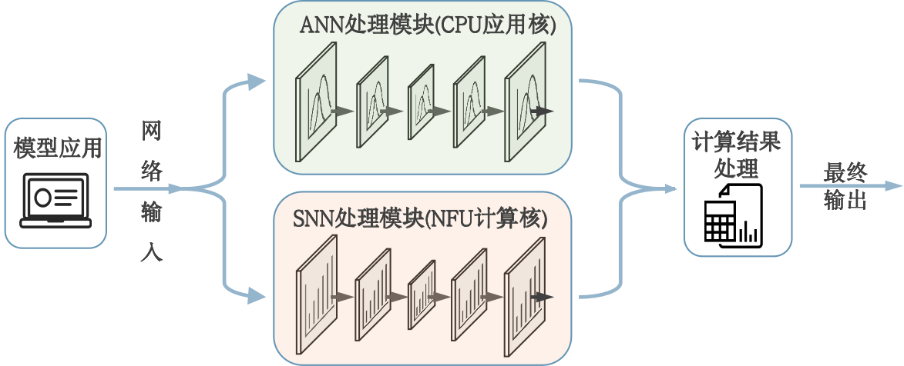

从头搭建神经网络
概述
本示例展示如何使用 TruSynapse 框架将一个三层前向传播全连接神经网络映射到 NFU 并启动计算。 文档按流程分为网络构建、连接转换、输入准备、构造子网执行体与执行五个部分。
构建神经网络（net）
描述网络结构（层次、每层神经元数、必要的神经元/层参数等），并将网络信息保存为变量（例如 net），供后续映射使用。
示例：
1import snntorch as snn
2import torch.nn as nn
3class SNNMLP(nn.Module):
4 def __init__(self, input_neuron_num=784, hidden1=512, hidden2=256, output_neuron_num=10, beta=0.9):
5 super(SNNMLP, self).__init__()
6 self.fc1 = nn.Linear(input_neuron_num, hidden1, bias=False)
7 self.lif1 = snn.Leaky(beta=beta, spike_grad=surrogate.fast_sigmoid())
8
9 self.fc2 = nn.Linear(hidden1, hidden2, bias=False)
10 self.lif2 = snn.Leaky(beta=beta, spike_grad=surrogate.fast_sigmoid())
11
12 self.fc3 = nn.Linear(hidden2, output_neuron_num, bias=False)
13 self.lif3 = snn.Leaky(beta=beta, spike_grad=surrogate.fast_sigmoid())
14
15 def forward(self, x):
16 mem1 = self.lif1.init_leaky()
17 mem2 = self.lif2.init_leaky()
18 mem3 = self.lif3.init_leaky()
19
20 spk1, mem1 = self.lif1(self.fc1(x), mem1)
21 spk2, mem2 = self.lif2(self.fc2(spk1), mem2)
22 spk3, mem3 = self.lif3(self.fc3(spk2), mem3)
23 return spk3, mem3
24
25net = SNNMLP()
转换连接关系数据（connections）
使用辅助函数将二维连接矩阵/张量转换为框架需要的三元组格式（src_id, dst_id, weight）。
示例函数：
1def connection_trans(connection_tensor, start1layer_ID, block_num):
2 """
3 将二维连接张量转换为三元组列表。
4 connection_tensor: 2D tensor，形状为 (neuron_in_src_block, neuron_in_dst_block)
5 start1layer_ID: 源层第一个神经元的全局 ID
6 block_num: 子模块数量（重复块数）
7 返回: triplets 列表，元素为 (src_id, dst_id, weight_float32)
8 """
9 triplets = []
10 neuron_in_src_block, neuron_in_dst_block = connection_tensor.shape
11 start2layer_ID = start1layer_ID + block_num * neuron_in_src_block
12 for k in range(block_num):
13 for i in range(neuron_in_src_block):
14 for j in range(neuron_in_dst_block):
15 src_id = i + start1layer_ID + k * neuron_in_src_block
16 dst_id = j + start2layer_ID + k * neuron_in_dst_block
17 weight = np.float32(connection_tensor[i, j].item())
18 triplets.append((src_id, dst_id, weight))
19 return triplets
20
21
22connection_file = "./mnist_snn.pkl"
23connection_origin_value = []
24with open(connection_file, 'rb') as pk:
25 connection_value = pickle.load(pk)
26
27for key, value in connection_value.items():
28 if 'weight' in key:
29 connection_origin_value.append(value.T)
30
31for i in connection_origin_value:
32 print(i.shape)
33
34connection_input = connection_trans(connection_origin_value[0], 0, 1)
35connection_hidden1 = connection_trans(connection_origin_value[1], 784, 1)
36connection_output = connection_trans(connection_origin_value[2], 1296, 1)
37connections = connection_input + connection_hidden1 + connection_output
准备输入脉冲（inputdata）
输入应为一维列表，元素为 0 或 1，长度等于输入层神经元数。
示例：
1def convert_mnist_to_spike(n=100, thr=0.5, datapath='./data'):
2
3 """Convert MNIST images to binary (spike) representation.
4 :param n: int
5 数据批次大小，指定要处理的样本数量或每个输出批次中的样本数（默认：100）。
6 :param thr: float
7 脉冲转化的阈值，像素值大于该阈值将被视为脉冲（1），否则为非脉冲（0）（默认：0.5）。
8 """
9 test = datasets.MNIST(root=datapath, train=False, download=True,
10 transform=transforms.ToTensor())
11 # 脉冲转化
12 spike = [(test[i][0].view(-1) > thr).int().numpy()
13 for i in range(min(n, len(test)))]
14
15 inputdata = np.concatenate(spike)
16 np.savetxt('inputdata.txt', inputdata, fmt='%d')
17 return inputdata
18
19inputdata = convert_mnist_to_spike()
构造 NFU 子网执行体
使用框架接口将网络、连接和输入组合成可执行的数据结构（示例接口名使用 functional.framework）。
示例：
1from snntorch import functional
2
3data = functional.framework(net, connections, inputdata)
执行 NFU 子网并获取输出
调用运行接口执行 NFU 子网，并读取返回结果。
示例：
1net_output = functional.run(data)
处理输出结果
NFU的输出结果保存在输出spike空间，用户可以直接读取该空间的数据，也可以使用框架的工具进行转换
1、NFU输出结果
NFU直接输出结果以32位数据表示，具体表示形式为：
15bit：timestep信息，表示该神经元输出是哪个时间步产生
4bit：代表着输出层神经元所在的GNC号
13bit：代表着该神经元的逻辑ID
2、转换工具输出
我们提供了转换工具对输出结果进行整理，具体输出结果为：
输出格式：二维数组，每个元素包含了所有输出层神经元信息
转换后的结果中，数组的索引代表着timestep信息，即转换工具会统计该timestep所有输出层神经元发放脉冲的情况，若该timestep有发放则该神经元所在的位置置1，否则置0
示例：
假设一个神经网络有4个输出层神经元：
timestep0时：2号神经元与4号神经元有输出
timestep1时：一号神经元有输出
timestep2时：所有输出层神经元均发放脉冲
timestep3时：所有输出层神经元均不发放脉冲
timestep4时：神经元1、2、4均发放脉冲
则转换后的输出结果为：[[0101],[1000],[1111],[0000],[1101]]
该输出会保存为outputdata供用户调用，用户可根据网络用途对NFU的输出进行处理。
导入已训练神经网络
概述
对于已训练好的神经网络（例如 Deepseek、千问 等），网络结构和参数来自外部资源，需构建 NFU 子网执行体（SNNData）并调用底层驱动执行。 下面示例按典型的步骤给出参考实现。
步骤
实例化 NFU 子网执行体
1# 实例化一个 SNNData 子网执行体
2snn_data = SNNData()
填充子网执行体各字段（示例）
1# 填充 27 个配置参数
2snn_data.params = (ctypes.c_uint64 * 27)(*[ctypes.c_uint64(x) for x in params])
3
4# 填充 connection_data
5snn_data.connection_data = (ctypes.c_uint64 * len(connection_data))(
6 *[ctypes.c_uint64(x) for x in connection_data]
7)
8snn_data.connection_len = len(connection_data)
9
10# 填充 inputneuronlist_data
11snn_data.inputneuronlist_data = (ctypes.c_uint32 * len(inputneuronlist_data))(
12 *[ctypes.c_uint32(x) for x in inputneuronlist_data]
13)
14snn_data.inputneuronlist_len = len(inputneuronlist_data)
15
16# 填充 inputspike_data
17snn_data.inputspike_data = (ctypes.c_uint32 * len(inputspike_data))(
18 *[ctypes.c_uint32(x) for x in inputspike_data]
19)
20snn_data.inputspike_len = len(inputspike_data)
21
22# 填充 neuronbase_data
23snn_data.neuronbase_data = (ctypes.c_uint32 * len(neuronbase_data))(
24 *[ctypes.c_uint32(x) for x in neuronbase_data]
25)
26snn_data.neuronbase_len = len(neuronbase_data)
27
28# 填充 neuron_data
29snn_data.neuron_data = (ctypes.c_uint32 * len(neuron_data))(
30 *[ctypes.c_uint32(x) for x in neuron_data]
31)
32snn_data.neuron_data_len = len(neuron_data)
33
34# 初始化输出字段
35snn_data.output_data = None
36snn_data.output_len = 0
执行子网
1driver = SNNDriver()
2driver.execute(ctypes.byref(snn_data))
处理子网输出
1if snn_data.output_data and snn_data.output_len > 0:
2 output_array = ctypes.cast(snn_data.output_data, POINTER(c_uint32 * snn_data.output_len))
3 output_results = [output_array.contents[i] for i in range(snn_data.output_len)]
回收子网执行体资源
1driver.free_output(ctypes.byref(snn_data))
搭建混合神经网络
作为一款类脑CPU的框架，TruSynapse 除了支持常规的脉冲神经网络外，还能支持ANN/SNN混合神经网络。 用户可以将部分子网部署在 NFU 上执行，而其他子网继续在 CPU 上运行，从而实现性能与灵活性的平衡。
{kind=link}

ANN/SNN混合神经网络示例
应用场景示例
- 边缘智能监控
SNN：处理事件相机（DVS）流，提供毫秒级或更低延迟的实时检测与触发，功耗极低，适合全天候运行。
ANN：仅在触发时启动，进行高精度识别与行为/人脸分析，节省能耗。
- 自动驾驶与机器人感知
SNN：处理激光雷达或事件相机的时序数据，快速响应紧急避障。
ANN：负责交通标志识别、路径规划与场景理解，承担复杂推理任务。
- 脑机接口（BCI）
SNN：实时解码神经脉冲，实现超低延迟的反馈控制。
ANN：执行意图识别与高级指令映射。
- 工业质检
SNN：在高速流水线上实时检测缺陷并触发剔除，延迟极低。
ANN：对缺陷进行分类与严重度评估，通常离线或异步运行以保证准确性。
- 低功耗语音唤醒
SNN：常时监听唤醒词，功耗极低，提供即时唤醒信号。
ANN：在唤醒后开展语音识别与自然语言理解，完成复杂交互。
下面给出一个简单的示例，演示如何在 Trusynapse 中搭建一个混合神经网络。
定义混合神经网络结构
1import snntorch as snn
2import torch.nn as nn
3
4
5class SNNClassifier:
6 def __init__(self):
7 # 定义SNN子网结构
8 pass
9
10 def __call__(self, spikes):
11 # 执行SNN推理，返回脉冲计数
12 return snn_output
13
14class HybridInspectionNet_Simplified:
15 def __init__(self):
16 # 核心模块
17 self.encoder = TemporalContrastEncoder() # 图像 → 脉冲
18 self.snn_core = SNNClassifier() # 脉冲 → 脉冲计数
19 self.decoder = SpikeDecoder() # 脉冲计数 → 缺陷/位置
20 self.analyzer = DetailedAnalyzer() # 原始图像 → 详细分析
21 self.defect_queue = [] # 待分析样本队列
22
23 def forward(self, image_stream):
24 for frame in image_stream:
25 # 1. 极速检测路径（总延迟 <500µs）
26 spikes = self.encoder(frame) # CPU预处理
27 snn_out = self.snn_core(spikes) # SNN推理（NFU）
28 has_defect, conf, bbox = self.decoder(snn_out) # CPU后处理
29
30 # 2. 实时决策与剔除
31 if has_defect and conf > 0.7:
32 trigger_rejection() # 物理剔除
33 self.defect_queue.append((frame, bbox, conf))
34
35 # 3. 异步批量分析（离线/线程）
36 if len(self.defect_queue) >= 32:
37 batch = self.defect_queue[:32]
38 self.defect_queue = self.defect_queue[32:]
39 self._analyze_batch(batch) # 调用详细分析
40
41 def _analyze_batch(self, batch):
42 frames = [item[0] for item in batch]
43 results = self.analyzer(frames) # 使用ANN分析原始图像
44 save_to_database(results)
将 ANN 子网部署到 CPU 上执行，SNN 子网部署到 NFU 上执行
1to be continued...